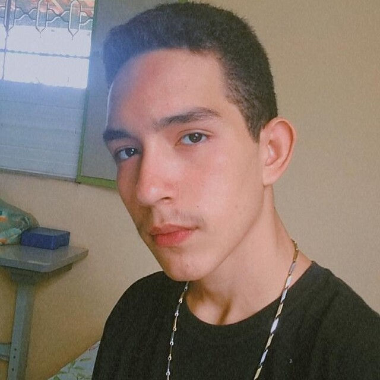
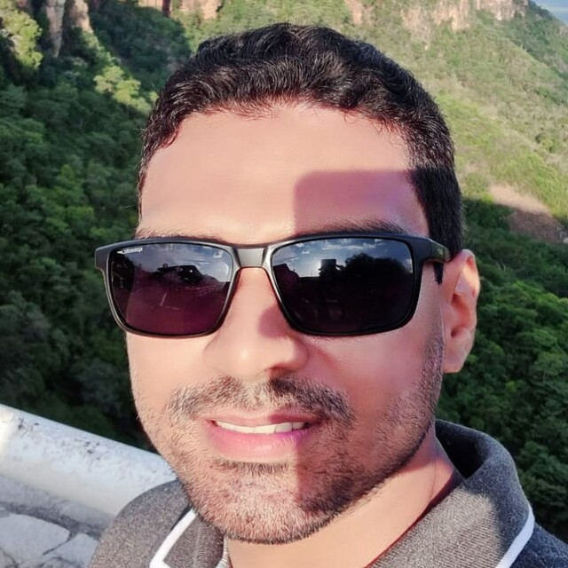
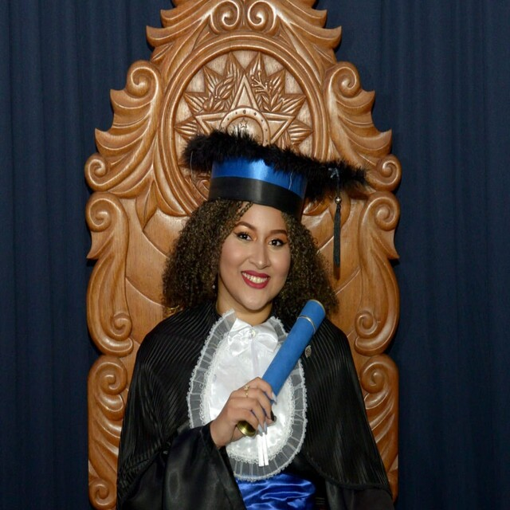

Patetas TDS |
Portfólio 01 | Portfolio 02 | Portfolio 03 | Contate-nos |
Membro 01 |
|
|  | Sou um jovem estudante de Análise e desenvolvimento de sistemas, acho muito interessante fazer códigos para sites e tenho o sonho de desenvolver um jogo bem divertido ou talvez ser um terror para os jogadores criando jogos difífceis 😈, tambem tenho o sonho de criar um aplicativo que seja útil para as pessoas resolverem seus problemas 😇. Tenho facilidade de aprender muitas coisas 😁, uma delas envolve esse curso de ADS, até porque antes de começar eu ja gostava muito de mecher em computadores. |
Membro 02 |
|
|  | Sou estudante do curso Técnico em Desenvolvimento de Sistemas (TDS) no Instituto Federal do Piauí (IFPI) desde 2024.1. Me identifico bastante com essa área, pois além de gostar, “sou apaixonado por tecnologia e programação”. Me considero uma pessoa criativa, algo essencial para quem quer ingressar e prosperar neste setor em constante evolução. Meu objetivo é desenvolver soluções inovadoras que abordem desafios e demandas no universo da programação, contribuindo assim para um avanço significativo nessa área. |
Membro 03 |
|
|  | Olá, meu nome é Joice 😊 e tenho formação em Análise e desenvolvimento de Sistemas, gosto muito de programar e quero poder trabalhar nessa área 🙃, quero ser uma boa profissional e ter orgulho disso sabe, um dia terei minha clínica de veterinária e quero desenvolver meu aplicativo para a mesma 🤓. |
|
|
|
Para mais informações sobre as redes sociais de cada um do desenvolvedores, estarão em seus respectivos portfólios. |
Copyright © |